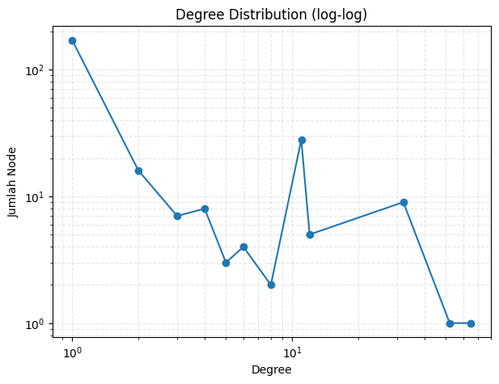
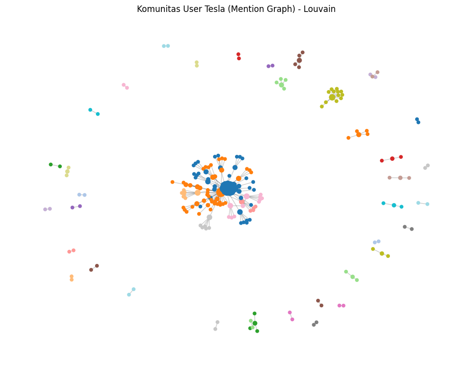

Tugas 9 | Crawling Twiter (X)#
Deteksi Komunitas Pengguna Twitter (Dataset: hastag_250.csv)#
Membangun graph berdasarkan mention (@username) dari tweet, lalu mendeteksi komunitas menggunakan metode Louvain.
import library
!pip install pandas networkx python-louvain matplotlib
Requirement already satisfied: pandas in c:\users\endyzan\appdata\local\programs\python\python311\lib\site-packages (2.0.2)
Requirement already satisfied: networkx in c:\users\endyzan\appdata\local\programs\python\python311\lib\site-packages (3.1)
Requirement already satisfied: python-louvain in c:\users\endyzan\appdata\local\programs\python\python311\lib\site-packages (0.16)
Requirement already satisfied: matplotlib in c:\users\endyzan\appdata\local\programs\python\python311\lib\site-packages (3.7.1)
Requirement already satisfied: python-dateutil>=2.8.2 in c:\users\endyzan\appdata\roaming\python\python311\site-packages (from pandas) (2.8.2)
Requirement already satisfied: pytz>=2020.1 in c:\users\endyzan\appdata\local\programs\python\python311\lib\site-packages (from pandas) (2023.3)
Requirement already satisfied: tzdata>=2022.1 in c:\users\endyzan\appdata\local\programs\python\python311\lib\site-packages (from pandas) (2023.3)
Requirement already satisfied: numpy>=1.21.0 in c:\users\endyzan\appdata\local\programs\python\python311\lib\site-packages (from pandas) (1.26.4)
Requirement already satisfied: contourpy>=1.0.1 in c:\users\endyzan\appdata\local\programs\python\python311\lib\site-packages (from matplotlib) (1.0.7)
Requirement already satisfied: cycler>=0.10 in c:\users\endyzan\appdata\local\programs\python\python311\lib\site-packages (from matplotlib) (0.11.0)
Requirement already satisfied: fonttools>=4.22.0 in c:\users\endyzan\appdata\local\programs\python\python311\lib\site-packages (from matplotlib) (4.40.0)
Requirement already satisfied: kiwisolver>=1.0.1 in c:\users\endyzan\appdata\local\programs\python\python311\lib\site-packages (from matplotlib) (1.4.4)
Requirement already satisfied: packaging>=20.0 in c:\users\endyzan\appdata\local\programs\python\python311\lib\site-packages (from matplotlib) (23.0)
Requirement already satisfied: pillow>=6.2.0 in c:\users\endyzan\appdata\local\programs\python\python311\lib\site-packages (from matplotlib) (9.5.0)
Requirement already satisfied: pyparsing>=2.3.1 in c:\users\endyzan\appdata\local\programs\python\python311\lib\site-packages (from matplotlib) (3.0.9)
Requirement already satisfied: six>=1.5 in c:\users\endyzan\appdata\roaming\python\python311\site-packages (from python-dateutil>=2.8.2->pandas) (1.16.0)
[notice] A new release of pip is available: 24.1 -> 25.3
[notice] To update, run: python.exe -m pip install --upgrade pip
load
import pandas as pd
import ast
import networkx as nx
import matplotlib.pyplot as plt
from collections import Counter
import math
# Load CSV
df = pd.read_csv("hastag_250.csv")
print("Dataset berhasil dimuat!")
print("Jumlah Baris :", len(df))
Dataset berhasil dimuat!
Jumlah Baris : 10016
Ekstrak Mention (@username) sebagai Edge Graph
Mention di kolom tweet (pakai regex)
Reply-to user (pakai parsing list dict)
import re
def extract_mentions(tweet):
if pd.isna(tweet):
return []
return re.findall(r"@([A-Za-z0-9_]+)", str(tweet))
def extract_reply_to(val):
if pd.isna(val) or val == "[]":
return []
try:
parsed = ast.literal_eval(val)
return [x['screen_name'] for x in parsed]
except:
return []
tambahkan kolom
df["mentions"] = df["tweet"].apply(extract_mentions)
df["reply_users"] = df["reply_to"].apply(extract_reply_to)
df[["tweet", "mentions", "reply_users"]].head()
| tweet | mentions | reply_users | |
|---|---|---|---|
| 0 | @GailAlfarATX @elonmusk @Tesla @teslacn @Tesla... | [GailAlfarATX, elonmusk, Tesla, teslacn, Tesla... | [GailAlfarATX, elonmusk, Tesla, teslacn, Tesla... |
| 1 | @elonmusk @GailAlfarATX @Tesla @teslacn @Tesla... | [elonmusk, GailAlfarATX, Tesla, teslacn, Tesla... | [elonmusk, GailAlfarATX, Tesla, teslacn, Tesla... |
| 2 | @elonmusk #Think about buying a country , #Mex... | [elonmusk, Tesla, SafetyMentalst] | [] |
| 3 | @get_innocuous Actual receipts, and yet you ha... | [get_innocuous] | [get_innocuous] |
| 4 | Tesla wall battery for the save! Power went ou... | [] | [] |
Buat Graph: Node = username, Edge = mention → mentioned_user
G = nx.Graph()
for _, row in df.iterrows():
user = str(row["username"])
# mention di tweet
for m in row["mentions"]:
G.add_edge(user, m.lower())
# reply-to
for r in row["reply_users"]:
G.add_edge(user, r.lower())
info dasar graph
print("=== INFO GRAPH ===")
print("Jumlah Node :", G.number_of_nodes())
print("Jumlah Edge :", G.number_of_edges())
degrees = dict(G.degree())
stats = {
"nodes": G.number_of_nodes(),
"edges": G.number_of_edges(),
"avg_degree": sum(degrees.values()) / G.number_of_nodes(),
"density": nx.density(G),
"top_10_by_degree": sorted(degrees.items(), key=lambda x: x[1], reverse=True)[:10]
}
for k, v in stats.items():
print(k, ":", v)
=== INFO GRAPH ===
Jumlah Node : 255
Jumlah Edge : 542
nodes : 255
edges : 542
avg_degree : 4.250980392156863
density : 0.01673614327620812
top_10_by_degree : [('elonmusk', 65), ('tesla', 52), ('gailalfaratx', 32), ('teslacn', 32), ('teslaownersebay', 32), ('blueskykites', 32), ('kristennetten', 32), ('jennicurrent', 32), ('daelmor', 32), ('ihearttesla', 32)]
Plot Degree Distribution (log-log)
degree_vals = [d for _, d in G.degree()]
degree_counts = Counter(degree_vals)
deg, cnt = zip(*sorted(degree_counts.items()))
plt.figure(figsize=(7,5))
plt.loglog(deg, cnt, marker="o")
plt.xlabel("Degree")
plt.ylabel("Jumlah Node")
plt.title("Degree Distribution (log-log)")
plt.grid(True, which="both", ls="--", alpha=0.3)
plt.show()

Deteksi Komunitas (Louvain Method)
from community import community_louvain
print("Menjalankan Louvain...")
partition = community_louvain.best_partition(G)
modularity = community_louvain.modularity(partition, G)
num_communities = len(set(partition.values()))
print("Jumlah Komunitas :", num_communities)
print("Modularity :", modularity)
Menjalankan Louvain...
Jumlah Komunitas : 45
Modularity : 0.46255157201018543
simpan
df_comm = pd.DataFrame(list(partition.items()), columns=["node", "community"])
df_comm = df_comm.sort_values(["community", "node"])
df_comm.to_csv("tesla_communities.csv", index=False)
print("tesla_communities.csv berhasil disimpan!")
tesla_communities.csv berhasil disimpan!
ukuran komunitas
summary = df_comm["community"].value_counts().sort_values(ascending=False)
summary
community
5 44
0 42
2 36
36 13
29 11
8 7
35 6
6 5
23 5
12 5
17 5
9 4
11 3
41 3
39 3
14 3
25 3
37 3
24 2
3 2
4 2
7 2
10 2
13 2
15 2
16 2
18 2
19 2
20 2
21 2
1 2
33 2
26 2
27 2
22 2
42 2
30 2
31 2
40 2
32 2
34 2
43 2
28 2
38 2
44 2
Name: count, dtype: int64
visualisasi jaringan komunitas
sub_nodes = list(degrees.keys())[:1000]
H = G.subgraph(sub_nodes)
pos = nx.spring_layout(H, seed=42)
communities = list(sorted(set(partition.values())))
mapping = {c: i for i, c in enumerate(communities)}
node_colors = [mapping[partition[n]] for n in H.nodes()]
node_sizes = [max(10, math.sqrt(dict(H.degree())[n])*20) for n in H.nodes()]
plt.figure(figsize=(12,9))
nx.draw_networkx_nodes(H, pos, node_color=node_colors, cmap=plt.get_cmap("tab20"), node_size=node_sizes)
nx.draw_networkx_edges(H, pos, alpha=0.2)
plt.title("Komunitas User Tesla (Mention Graph) - Louvain")
plt.axis("off")
plt.show()
